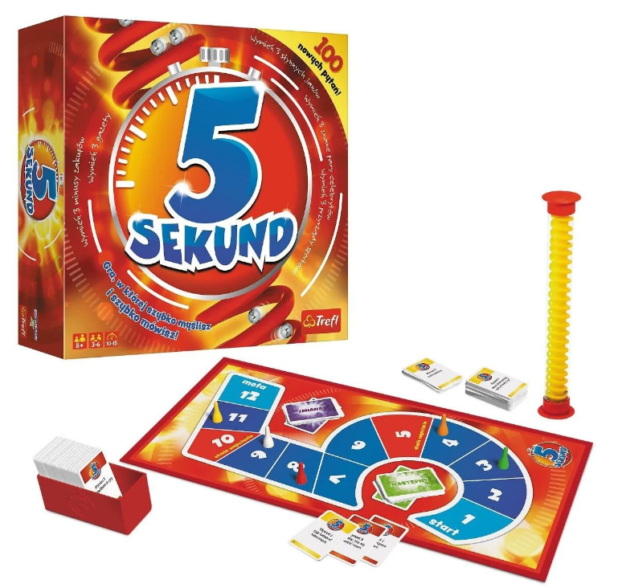
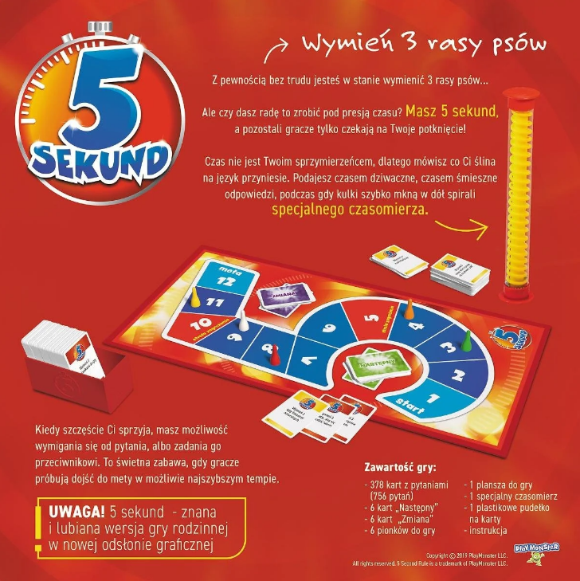

OPIS

Gra "5 sekund" to wyjątkowe połączenie gry karcianej, towarzyskiej i planszowej, w której kluczową rolę odgrywają szybkość, refleks, podzielna uwaga oraz odporność na stres. Gracze mają zaledwie pięć sekund na udzielenie odpowiedzi na pytania, co wymaga błyskawicznego myślenia!
Rozgrywka opiera się na planszy, służącej do zapisywania postępów, oraz na zestawie kilkuset kart z pytaniami. Zadaniem uczestników jest szybkie reagowanie i udzielanie odpowiedzi w wyznaczonym czasie. Sukces oznacza przesunięcie pionka w stronę mety, a zwycięzcą zostaje ten, kto jako pierwszy dotrze na koniec planszy.
ZASADY

Gra „5 sekund” wyróżnia się prostotą zasad i mechaniki, co czyni ją idealnym wyborem na imprezy i spotkania w różnorodnym gronie.
Nie wymaga dzielenia rozgrywki na etapy, dzięki czemu jest dynamiczna i łatwa w obsłudze.
- Przygotuj planszę, pionki oraz karty z pytaniami, układając je zakryte. Pionki ustaw na polu startowym.
- Rozpoczyna najmłodszy gracz lub osoba wybrana na podstawie ustaleń.
- Gracz siedzący obok odczytuje pytanie, a po jego zakończeniu uruchamia czasomierz odliczający 5 sekund.
- Odpowiadający ma dokładnie 5 sekund na udzielenie odpowiedzi. Brak odpowiedzi w tym czasie oznacza utratę kolejki.
- W trakcie gry można korzystać z kart specjalnych: „Następny” (przekazanie pytania innemu graczowi) i „Zmiana” (zamiana pytania).
- Wygrywa gracz, który jako pierwszy dotrze pionkiem na metę, przesuwając go za każdą poprawną odpowiedź o jedno pole.
NAJCIEKAWSZE ELEMENTY ROZGRYWKI
Gra „5 sekund” oferuje kilka wyjątkowych elementów, które sprawiają, że rozgrywka jest dynamiczna i angażująca. Oto najciekawsze z nich:
- Czasomierz 5-sekundowy: To serce gry – ograniczenie czasowe zmusza graczy do błyskawicznego myślenia i odpowiadania na pytania. Odgłos kul toczących się po spirali czasomierza wprowadza dodatkowy element presji, co podnosi emocje.
- Karty z pytaniami: Pytania mogą być zarówno proste, jak i podchwytliwe, na przykład: „Wymień trzy rzeczy, które są żółte”. Taka różnorodność gwarantuje zabawę i nieprzewidywalność. Pytania stymulują kreatywne myślenie, co bywa zabawne, zwłaszcza w stresie. Karty specjalne
- „Następny”: Umożliwia przekazanie pytania innemu graczowi, co pozwala na unikanie trudnych tematów i zmusza przeciwników do szybkiej reakcji.
- „Zmiana”: Pozwala na wymianę obecnego pytania na nowe, co jest ratunkiem w przypadku wyjątkowo trudnych pytań.
- Prosta mechanika gry: Brak skomplikowanych zasad pozwala nowym graczom szybko wdrożyć się w rozgrywkę. Dzięki temu gra sprawdza się w różnorodnych grupach, nawet tych, które nie są zaznajomione z grami towarzyskimi.
- Krótkie i dynamiczne rundy: Każdy gracz ma jedynie kilka sekund na odpowiedź, co zapewnia szybkie tempo gry i brak długiego oczekiwania na swoją turę.
- Elastyczne zasady rozpoczęcia: Możliwość elastycznego ustalania kolejności, na przykład „najmłodszy zaczyna” lub „osoba wyznaczona przez grupę”, nadaje grze towarzyski charakter.
- Różnorodność grup: Gra jest uniwersalna – dobrze sprawdza się zarówno w gronie rodzinnym, jak i na imprezach wśród przyjaciół. Różnorodność pytań i interakcyjna mechanika zapewniają śmiech i integrację.
„5 sekund” to gra, która pod presją czasu wywołuje zaskakujące odpowiedzi i gwarantuje mnóstwo śmiechu.
OPINIA (co mnie najbardziej wciąga)
Najbardziej wciągające w rozrywce jest jej zdolność do wywoływania emocji i angażowania nas na różnych poziomach. To, co sprawia, że rozrywka przykuwa uwagę, często zależy od osobistych preferencji, ale kilka uniwersalnych elementów zawsze wyróżnia się:
- Element wyzwania Gdy gra lub rozrywka zmusza nas do użycia inteligencji, refleksu czy kreatywności, stajemy się bardziej zaangażowani. Satysfakcja z pokonywania trudności działa bardzo motywująco.
- Nieprzewidywalność Element zaskoczenia lub nieprzewidywalnych zwrotów akcji – np. w grach planszowych, imprezowych czy nawet filmach – budzi ekscytację i ciekawość, co będzie dalej.
- Interakcje społeczne Wspólna zabawa z innymi, czy to w gronie rodzinnym, z przyjaciółmi czy w szerszej grupie, wzmacnia więzi i dostarcza dodatkowej frajdy. Często sami ludzie dodają dodatkowej warstwy humoru i emocji.
- Prostota zasad i szybkie tempo Łatwość rozpoczęcia gry czy uczestnictwa w jakiejś aktywności sprawia, że ludzie mogą szybko wejść w rozgrywkę bez zbędnych barier. Dynamika utrzymuje uwagę i nie pozwala na nudę.
- Humor i absurd Komedia, śmieszne sytuacje czy podchwytliwe pytania – to wszystko gwarantuje śmiech i poprawia nastrój, co jest często kluczowe w rozrywce.
- Element rywalizacji lub współpracy Zdrowa rywalizacja lub wspólne dążenie do celu potrafią wzbudzić ogromne zaangażowanie. Ludzie lubią poczucie osiągania czegoś – czy to wygrywając, czy współpracując w grupie.
Rozrywka, która angażuje zmysły, pobudza emocje i pozwala na chwilę oderwania od rzeczywistości, zawsze będzie miała swoją siłę przyciągania.